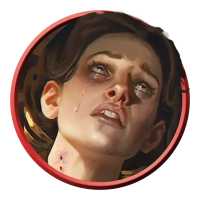

Фамильяр вампира
Vampire Familiar
Средний или Маленький Гуманоид, Нейтральный Злой

Класс Защиты 15 Инициатива +5 (15)
Хиты 65 (10к8 + 20)
Скорость 30 футов, Лазания 30 футов
| мод | спас | ||
|---|---|---|---|
| СИЛ | 17 | +3 | +3 |
| ЛОВ | 16 | +3 | +5 |
| ТЕЛ | 15 | +2 | +2 |
| мод | спас | ||
|---|---|---|---|
| ИНТ | 10 | +0 | +0 |
| МДР | 10 | +0 | +2 |
| ХАР | 14 | +2 | +2 |
Сопротивление урону Некротический
Иммунитеты Очарованный
Чувства Тёмное зрение 60 футов, пассивное Восприятие 14
Языки Общий
Опасность 3 (700 опыта; БВ +2)
Особенности
Вампирическая связь. Пока фамильяр и его хозяин-вампир находятся на одном плане бытия, вампир может общаться с фамильяром телепатически и ощущать окружение через восприятие фамильяра.
Действия
Мультиатака. Фамильяр совершает две атаки Теневым кинжалом.
Теневой кинжал. Бросок рукопашной или дальнобойной атаки: +5, досягаемость 5 фт. или дистанция 20/60 фт. Попадание: 5 (1к4 + 3) Колющего урона плюс 7 (3к4) Некротического урона. Если эта атака опускает Хиты цели до 0, цель становится Стабилизированной, но Отравленной на 1 час. Пока цель Отравлена таким образом, она также Парализована.
Бонусные действия
Проворство несмертных. Фамильяр совершает действие Рывок или Отход.
Бонус мастерства +2
Среда обитания Город, Подземье
Сокровища Любые
Вампиры
Пьющие кровь владыки ночи
Вампиры скрывают свою проклятую бессмертную природу и выдают себя за живых, чтобы питаться их кровью. Самые младшие и кровожадные из них часто попадают в рабство к своим создателям, а невероятно хитрые и древние вампиры веками наслаждаются сверхъестественной властью над силами ночи.
Днём бессмертные создания скрываются в своих местах отдыха, недоступные для врагов и палящих солнечных лучей. Совершите бросок по таблице «Место отдыха вампира» для вдохновения или выберите сами мрачное место упокоения вампира.
Место отдыха вампира
| 1к6 | Место отдыха вампира находится… |
| 1 | Среди корней мёртвого дерева. |
| 2 | На дне затхлого пруда. |
| 3 | В гробу, наполненном могильной землёй. |
| 4 | В огромном сосуде с кровью или уксусом. |
| 5 | В недоступном для Гуманоидов пространстве. |
| 6 | Внутри скульптуры или комплекта доспехов. |
Фамильяры вампиров — смертные, которые служат своим бессмертным хозяевам по собственной воле или по принуждению. Они заряжают оружие смертоносной энергией, которая лишает жертву сознания и превращает её в лёгкую добычу для вампира.
Многие фамильяры вампиров мечтают когда-нибудь сами стать вампирами, другие находятся под магическим очарованием, а третьи пожинают плоды неудачной сделки. Каждый из них отмечен вампирской порчей. Она проявляется в трупном цвете кожи, неестественно быстрых движениях, многочисленных следах укусов хозяина. Если же вампиры, которым они служат, будут уничтожены, фамильяры утратят свои сверхъестественные способности и вновь станут обычными Гуманоидами.